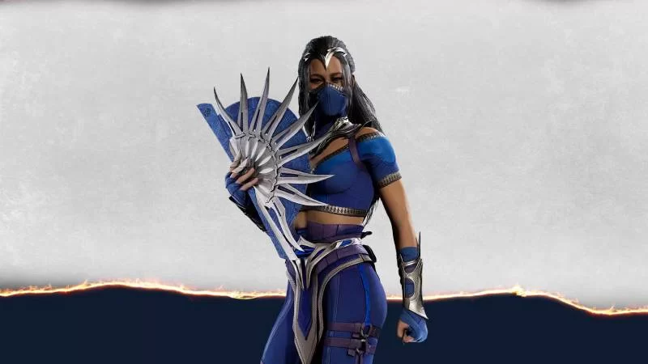

Após os eventos de Mortal Kombat 11 Aftermath, Liu Kang se tornou um deus e resolveu começar um novo universo do zero, alterando a história de lutadores conhecidos da franquia de luta mais sangrenta da atualidade.
Neste novo mundo, Scorpion e Sub-Zero serão irmãos, por exemplo. Além disso, Kitana e Mileena serão filhas de Sindel, mas continuarão sendo rivais.
